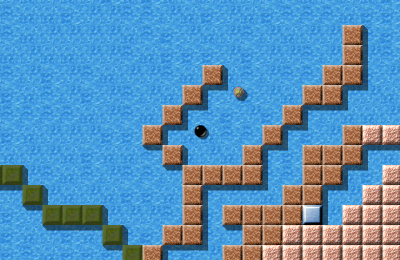

Комментарии наших посетителейВ конце голосования мы предоставили вам возможность оставить нам свои комментарии и замечания и были рады получить одобрительные отзывы, нам правда очень нужна такого рода обратная связь, поэтому нам хотелось бы процитировать здесь некоторые комментарии (часть была переведена):
Спасибо! :-)
А вот и виновники торжества: Лучший уровень для медитации 2008: «Mountain Climbing» от Joseph Dunne
После того как «Mountain Climbing» стал Самым забавным уровнем 2007, это исключительно уникальное творение Joseph Dunne получило ещё одну награду: оно было выбрано Лучшим уровнем для медитации 2008, получив 3.85 баллов из 5 возможных, обогнав «Cold Meditation» (3.59) и «Meditation Puzzle» (3.56).
Лучший активный уровень 2008: «Diving» от Joona Laire

Diving, VII/2
«Diving» заслуживает особого упоминания: во время голосования в этом году были моменты, когда «Diving» лидировал сразу в трёх номинациях (и выиграл бы, если бы победитель определялся по количеству голосов, а не по средним баллам), к тому же он уже занимал второе место в голосовании по номинации Самый забавный уровень в 2007-м! Лично я очень рад, что этому экстраординарному уровню всё-таки удалось стать Лучшим активным уровнем 2008, набрав 3.61 баллов и опередив «Phaeton» (3.48) и «A Cooler Spot In Hell» (3.39) Joona Laire этого заслуживает.
Лучший одноэкранный уровень 2008: «Industrial Puzzles» от Raoul Bourquin
«Industrial Puzzles» первым из одноэкранных уровней стал Уровнем Месяца, это было всего два месяца назад. Теперь он закономерно получил титул Лучший одноэкранный уровень 2008 и с самым большим из всех рейтингов этого года, 4.18 баллов, Raoul Bourquin отвоевал это место у «Plan Ahead» (3.71) и «What a Mess» (3.65).
Лучшее оформление 2008: «Temple of Gold» от Jacob Scott
«Temple of Gold» Jacob'а Scott'а, Уровень Декабрь 2007, несомненно один из лучших уровней Enigma, в этом году стал победителем в номинации «Лучшее оформление», для победы он набрал 4.04 баллов. Вслед за ним идут Уровень Года 2007 «Island Labyrinth» (3.79) и уже упоминавшийся «Diving» (3.61).
Самый забавный уровень 2008: «What's the Problem?» от Sven Siggelkow
What's the Problem?, IV/49
«What's the Problem?» Sven'а Siggelkow'а, один из самых удивительных уровней Enigma, завоевал титул самого забавного уровня 2008! С 3.39 баллами он обошёл «Pac Marble» (3.33) и даже «Diving» (3.31). Игроки считают, что он действительно это заслужил!
А теперь самая важная номинация: Уровень Года 2008: «Houdini» от Ronald Lamprecht!
К концу 2008-го года, всего четыре уровня преодолели отметку в 9 баллов: «Houdini», который набрал 9.36 баллов, «Island Labyrinth» и «Temple of Gold», которые делят второе место с 9.27 баллами и «Quadropolis», первый Совместно Сделанный Уровень, набравший 9.17 баллов — это уровни, считающиеся «сливками» (ориг. Crème de la Crème) Enigma, а «Houdini» получил в 2008-м самые высокие оценки среди остальных — значит, его автор, Ronald Lamprecht, становится Автором Уровня Года! Jacob Scott, которому до этого момента принадлежал этот желанный титул, написал для нас свои размышления об этом фантастическом произведении искусства:
Ах, «Houdini» … Я хорошо помню этот уровень. Чтобы решить
большую часть головоломок Enigma, нужно немного сообразительности, но
некоторые головоломки, такие как эта, потребуют не только сообразительности,
но и креативности — не только от автора, но и от игрока. Благодаря
неочевидным целям, он создаёт свою собственную особую среду.
Название «Houdini» очень точно описывает эту головоломку.
Так же, как и трюки Гудини со своим освобождением сразу из множества оков,
продвижение по уровню требует повторяющегося освобождения из одной области,
чтобы оказаться заложником ещё одного препятствия. Таким образом, игроку
бросают всё новые вызовы, а это значит, что играть на этом уровне очень увлекательно.
Я думаю, одна отличительная черта, которая выделяет самые увлекательные
высоко ценимые уровни Enigma, как этот, это необходимость исследовать
и экспериментировать. Такая определённо присутствовала в предыдущем
Уровне Года, моём «Island Labyrinth», с травянистыми
коридорами, выводящими к различным меньшим головоломкам. Но это справедливо
и для нового Уровня Года; вместо исследования огромных пространств,
решение этой головоломки требует самого настоящего исследования
всех взаимодействий между имеющимися предметами. Может он и невелик,
всего пара комнат, но потенциальное число различных подходов к его решению
огромно. Если честно, я считаю, что это справедливо для многих
уровней, победивших в этом году; каждый из них предлагает игроку
множество различных возможностей, либо выбора куда пойти, либо
вариантов использования определённых элементов, и предлагает
некую сложную проблему, которую, на первый взгляд, вообще нельзя решить,
используя предлагаемые элементы, не говоря уже о том, чтобы определить
их требуемое сочетание, но которую можно обойти, проявив изобретательность.
В этом состоит отличие от головоломок, в которых нужно просто правильным
образом расположить кусочки, используя их самым обычным способом
— скажем головоломки с ящиками и водой или лазером и
зеркалами. Хотя они и увлекательны, в одном они не могут сравниться с
Уровнями Года — я имею в виду дух исследования.
Эта награда за Уровень Года присуждается великолепному автору, который
за годы своей работы создал множество качественных уровней. Большинство
из его уровней основаны на какой-либо уникальной концепции или шаблоне,
который никто до этого не видел — в результате, пока не найдётся ключ к
решению, они часто кажутся непроходимыми, а потом головоломка
элегантно раскладывается на части. Уровень Года 2008 — один из уровней,
воплощающих дух исследования и новаторства, которые придают ещё
больше желания наконец решить его.
Возможно, Вам захочется перечитать статью о «Houdini» здесь.
В завершение …Этими словами мы заканчиваем нашу вторую серию об Уровнях Месяца и, как и в прошлом году, самое время поблагодарить всех, кто присылал свои комментарии, и авторов, которые помогали нам на протяжении последнего года, спасибо Ryujun, Daydreamer, Ronald Lamprecht, Manuel König, Tarim, Craven, Taztunes, Shoki, Mecke, JuSt, dev0, Moneymaker, Mark P., Brynn, Dominik Leipold, Martin, и Xang за их комментарии. Отдельное спасибо Ludmian Sedai, который написал фантастическую статью о «Gods of Enigma II» от moonpearl, NObby за несколько статей ;-), а также Clifford J. Tasner, который, не смотря на занятость гораздо более важными выборами сами-знаете-кого, всегда находил немного время и для нас, чтобы проверить наш английский и прислать свои комментарии. Большое спасибо Yurij и Ludmian, которые перевели огромный объём статей этой домашней страницы на русский. Мы благодарим Alain Busser за его восхитительную статью о «Patterns of Impulse» и Mecke, который присылал нам статьи для новой колонки «Шарикология!», которую мы, конечно же, продолжим в этом году. Конечно, мы не можем не поблагодарить авторов девяти изумительных уровней: Raoul Bourquin, Sven Siggelkow, Ronald Lamprecht, Jacob Scott, Jon 'WB' Sneyers, Moonpearl, и Lukas Schüller, без чьих уровней вообще не было бы Уровня Месяца; спасибо, что продолжаете работать, а также спасибо всем остальным авторам уровней! Как сказал Daniel Heck:
Это уровни служат для нас наградой, а не мы награждаем уровни.
Спасибо Daniel Heck, Meinolf Schneider и тем, кто сейчас занимается разработкой Enigma, в частности Ronald Lamprecht и Raoul Bourquin. Нет нужды излагать их вклад, все мы знаем, кто они, и что без их напряжённой работы и в прошлом, и сейчас, Enigma бы просто не существовала и не стала бы тем, чем она является сейчас. Текущую статистику наших девятнадцати УМ Вы можете найти в архиве УМ, а полные статистические отчёты голосования Вы можете найти здесь. С уважением, |


 Mountain Climbing, VII/22
Mountain Climbing, VII/22 Industrial Puzzles, VI/98
Industrial Puzzles, VI/98 Temple of Gold, VII/24
Temple of Gold, VII/24 Houdini, VI/74
Houdini, VI/74